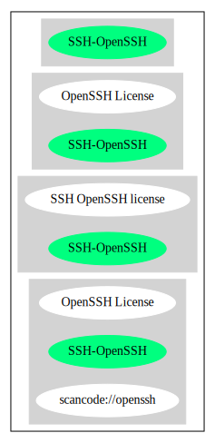

Key |
Value |
|---|---|
Fullname |
SSH OpenSSH license |
Shortname |
SSH-OpenSSH |
Rating |
Unknown, probably Attention or Stop or No-Go |
SPDX: http://spdx.org/licenses/SSH-OpenSSH.json
https://github.com/openssh/openssh-portable/blob/1b11ea7c58cd5c59838b5fa574cd456d6047b2d4/LICENCE#L10
{
"__impliedNames": [
"SSH-OpenSSH",
"SSH OpenSSH license"
],
"__impliedId": "SSH-OpenSSH",
"facts": {
"SPDX": {
"isSPDXLicenseDeprecated": false,
"spdxFullName": "SSH OpenSSH license",
"spdxDetailsURL": "http://spdx.org/licenses/SSH-OpenSSH.json",
"_sourceURL": "https://spdx.org/licenses/SSH-OpenSSH.html",
"spdxLicIsOSIApproved": false,
"spdxSeeAlso": [
"https://github.com/openssh/openssh-portable/blob/1b11ea7c58cd5c59838b5fa574cd456d6047b2d4/LICENCE#L10"
],
"_implications": {
"__impliedNames": [
"SSH-OpenSSH",
"SSH OpenSSH license"
],
"__impliedId": "SSH-OpenSSH",
"__isOsiApproved": false,
"__impliedURLs": [
[
"SPDX",
"http://spdx.org/licenses/SSH-OpenSSH.json"
],
[
null,
"https://github.com/openssh/openssh-portable/blob/1b11ea7c58cd5c59838b5fa574cd456d6047b2d4/LICENCE#L10"
]
]
},
"spdxLicenseId": "SSH-OpenSSH"
}
},
"__isOsiApproved": false,
"__impliedURLs": [
[
"SPDX",
"http://spdx.org/licenses/SSH-OpenSSH.json"
],
[
null,
"https://github.com/openssh/openssh-portable/blob/1b11ea7c58cd5c59838b5fa574cd456d6047b2d4/LICENCE#L10"
]
]
}